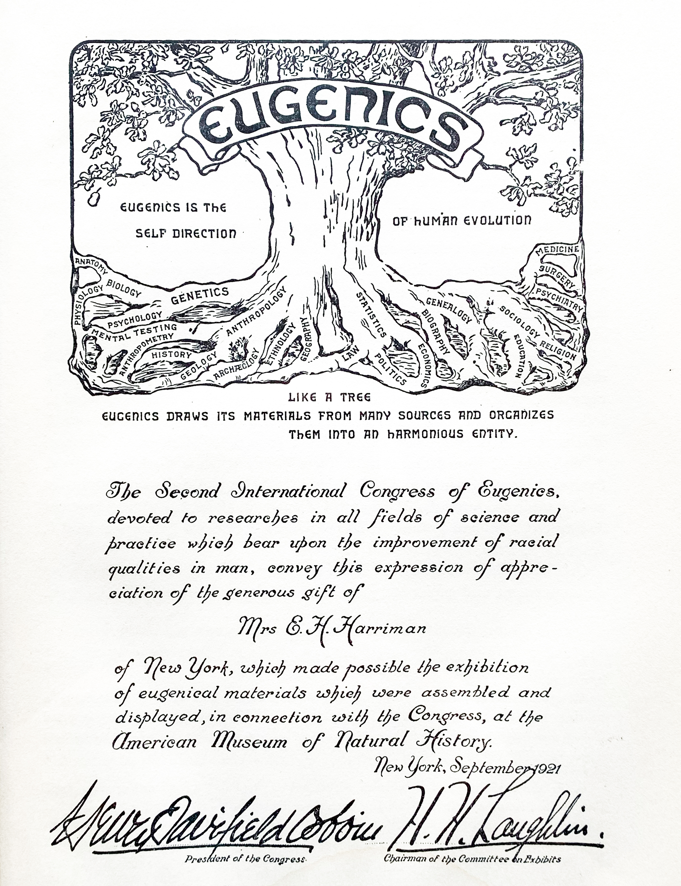
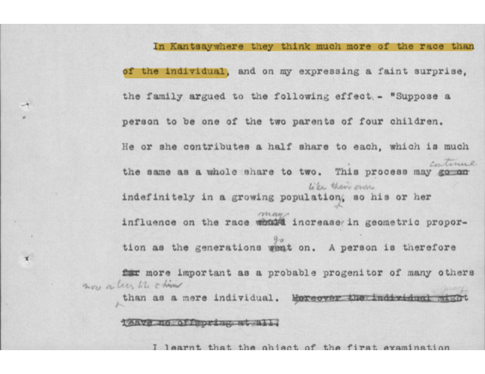

Evolution is personal. Every individual makes choices—selecting partners, seeking opportunities, and shaping the traits passed to future generations. This slow, adaptive process has always been part of human nature.
Yet, when the selective breeding practices once reserved for animals or crops are applied to entire populations, the stakes become far more troubling. Who decides who should thrive? Suddenly, what might have remained a matter of personal preference turns into an ideological system of control.
Enter Francis Galton—half-cousin to Charles Darwin. While fascinated by Darwin’s work on natural selection, Galton did not fully distinguish between the breeding of livestock and the management of human populations. He believed that human evolution could be guided more swiftly and efficiently by statistical insights. This subtle shift laid the groundwork for what would become eugenics.
Galton’s mathematical tools, like regression and correlation, were initially intended to observe and measure traits. But over time, these methods began to rank and classify intelligence, productivity, and “fitness.” Though rooted in scientific curiosity, such metrics often served to legitimize personal and societal biases. In Galton’s hands, numbers did more than describe the world—they seemed to redefine it.
There is a paradox at the heart of Galton’s work. The same statistical models that have propelled advances in medicine, genetics, and public health have, when applied to human categorization, led to some of history’s darkest policies. Whenever these tools are used to label entire groups as “inferior” or “unfit,” they become instruments of exclusion and harm rather than agents of knowledge.
This destructive pattern has repeated itself across different eras and disciplines. From the eugenic beliefs of early statisticians like Karl Pearson to modern algorithms that profile and divide users into marketable segments, the drive to classify and rank human beings remains a persistent temptation. The very methods developed to understand variation can just as easily be repurposed to justify bias, sideline outliers, and shape policy in ways that marginalize those who fail to fit neat, predefined categories.
At the Second International Eugenics Congress in 1921, held at the American Museum of Natural History in New York, a striking symbol stood at the center of the event: the “Eugenics Tree.” Its roots were labeled with disciplines like genetics, statistics, and sociology, while its branches stretched toward an imagined “harmonious entity.” The tree’s design proclaimed a vision of humanity perfected through the scientific categorization and manipulation of populations. Yet, conspicuously absent from its roots was perhaps the most essential discipline: philosophy. Without asking “why” before “how,” this symbolic tree leaned heavily on technical tools that simplified human complexity, treating populations as subjects to be molded rather than understood.

The Eugenics Tree, featured at the 1921 Congress, has since become a potent emblem of eugenic thought. Source: Prof Joe Cain.
This tree’s structure reflects the legacy of Francis Galton, the founder of eugenics and a pioneer in statistical methodologies. Galton wasn’t satisfied with merely studying variation; he sought to engineer it. Techniques like regression and correlation, which he helped develop, became more than methods for understanding patterns; they evolved into instruments for ranking traits and assigning value to groups. Intelligence, “fitness,” productivity—metrics that, while appearing scientific, were infused with Galton’s personal biases and societal prejudices.
The tools Galton pioneered remain central to modern data analysis. Regression and correlation—originally devised to support his eugenic vision—are now fundamental to disciplines ranging from medicine to artificial intelligence. The methods have changed, but the premise of grouping individuals into aggregates persists, shaping how we interpret and act upon data.
Francis Galton’s unpublished utopian novel, Kantsaywhere, offers a revealing glimpse into the ideological foundations of his work. In this imagined society, strict hierarchies determine who is permitted to reproduce, reflecting deeply entrenched beliefs about worthiness and fitness. Galton wrote, “They think much more of the race than the individual,” encapsulating his conviction that collective well-being should take precedence over individual autonomy. This mindset reduced human beings to statistical categories, stripping away individuality in service of a so-called greater good.

A page from Galton's manuscript of Kantsaywhere, reflecting his ideas on "racial fitness." Source: UCL Special Collections.
While overt discussions of "breeding" humanity have faded, the underlying philosophy—that collective progress can justify limiting individual freedoms—persists in contemporary discourse. From genetic engineering and public health policies to data-driven governance, there remains an unsettling tendency to prioritize group outcomes over personal rights.
Today, this logic is often reframed in more palatable terms: social equity, sustainability, or public welfare. Yet, the core tension between collective ideals and individual autonomy endures. Academic frameworks that emphasize group identity over individual agency echo Galton’s worldview, subtly shaping policies and societal norms. This raises critical questions: Are modern approaches to social progress merely updated versions of past ideologies? And how often do we accept collective narratives that diminish the value of the individual under the guise of societal improvement?
The philosophical root missing from the Eugenics Tree was the very foundation that could have challenged its core assumptions—the belief that human beings can be objectively categorized, ranked, and managed for the so-called "greater good." In the case of eugenics, science did not lead to philosophy; rather, a distorted philosophy led science astray. The guiding idea was that categorization itself was not only possible but desirable—that people could be divided into "fit" and "unfit," superior and inferior, based on measurable traits.
This philosophy granted elites the authority to impose subjective judgments about human worth, cloaking prejudice in the language of scientific objectivity. It assumed that certain traits—intelligence, health, productivity—could be isolated, measured, and used to justify who should reproduce, who should lead, and who should be cast aside. The absence of a deeper philosophical inquiry allowed these assumptions to flourish unchecked.
Had a robust philosophy of individual rights, ethics, and human dignity been integrated into this framework, it might have challenged the very premise of categorizing human beings as data points. It could have questioned whether scientific tools should ever be used to make moral decisions about human value. Instead, the lack of this critical root allowed subjective biases to masquerade as neutral science, paving the way for policies of sterilization, exclusion, and even genocide.
Today, we see echoes of this same logic in how data is used to guide social policies, assess human potential, and shape public opinion. Without philosophical grounding, modern statistical models risk repeating the same errors—allowing subjective judgments to be passed off as objective truths. The missing root of the Eugenics Tree reminds us that science without ethical reflection is vulnerable to misuse, and that philosophy must be deeply intertwined with how we measure and define human worth.
Continue reading: Magnetic Regression.